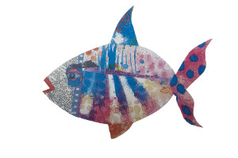

This is a story of How to Develop a Web App Game. It will include all the steps and thought processes required to create a successful Web App. Mind you, at this moment the App is not made. It is a concept and it is my first real functional web Application. As an avid hobbiest, I learned many computer and web technologies. I hove a working familiarity with HTML, CSS, JavaScript, PHP, MySQL, NodeJS, Mongodb, Redis, Hapi.js, AngularJS, Android Applications and some JQuery. I use the term a working familiarity because I have a good basic understanding. I have the blocks, now to cement them together and build a structure.
No dream has ever been reached unless it was a dream. Strange sounding maybe, but very true. Dream your project, then work to make it a reality. The internet is an unbelievable resource and it has information for every skill set and level you need or wish to aquire. STUDY all the time. Do not start to look up how to make a div appear as a popup and wind up looking at beautiful cloud formations. Keep on track. Make notes, hundreds of notes. Don't be afraid of real paper. In fact writing ideas and even code will help you remember what you learn. Beware of cut and pasting. I write my notes in HTML and use CSS to make them look nice. That way I can link to resources for later use. Not only that you will re-read what you wrote and give yourself the visual learning tool. You also can link to your code in a text file.
The hardest part by far. If you are taking this seriously buy a brand new notebook just for your project. Use it for nothing else. I use pencil and paper for that part. Also, I do not erase. I redraw and keep the old stuff. Never know if looking back will spur a memory. I actually bought a blank hard cover book. My idea was serious, treat it that way. I also decided to keep this Info-Diary of the process in hope it would help or motivate another developer.
The idea came from the blue. My sister is an Artist. She has come up with these neat looking fish characters.
After a little 'Gimp' work
( I am a Linux Dude Gimp is the Linux equivalent to Photoshop)
She had sent me a few pictures and I thought how neat it would be to make a short stop-motion video. When I started thinking about how to do that, it came to mind that JQuery drag and drop would be a very neat way. I could make a library of images and drag and drop them on the screen ( in a browser of course ). Drag n Drop If you go there, the left arrow will bring in another fish. I could make a div with a background then move the images and screen capture the Div. Stop motion Then I could Join the pictures with ffmpeg and make a video. It worked. It was very easy and worked fantasic.
In fact it worked so well, I started on a program ' Stop-Motion-Studio '. A browser based stop-motion video maker. Specially put to gether for non-programmers and working from a GUI. So anyone could easily make stop motion videos. With no progamming experience at all.
I had drag and drop but, no change of angle. I started looking up how to rotate the image and came across a site that showed how to move the images with buttons.BUTTONS That meant that with only two objects I could move one with my mouse and one with my keyboard. As I looked at the coding I realized I could also move them with buttons. WOW ! On my tablet one with the right hand and one with the left. MMM That sounds game-like. Then came the fishy jitter idea. I could have other fish in the 'picture' that just kind of floated around:Float
I still was half in my 'Stop-Motion Studio' idea. I could see recording video with some preprogramed objects AND the drag and drop for a few specific images but, deep inside I saw it changing fast into an APP.
Much depends on what kind of situation you are in. Do you have a regular job? If you want to build an App and really hope to make a few bucks doing it and you are not a seasoned developer, it will take time. I am retired and live in the Philippines. I have a goal. I would like to buy a house for my Filipina wife. I want the App to do that. So, if it takes six months, so what. I do not need the income to survive. It is a bonus. I am lucky and think that is the best situation to be in. Not to require, but to desire.
As you think of things you need TODO, list them. Use dates. When completed Mark them, and date them when done. DO NOT get rid of items on your TODO list.
The second entry is Ghost Image -- Fantisic ( for the right moment ) . Imagine my ' FishKiss'
App you click the 'opposition' It responds with " Hey, You shouldn't grab me !"
this can be a neat toy:
<div id="drag-with-image" class="dragdemo" draggable="true">drag me</div>
<script>
document.getElementById("drag-with-image").addEventListener("dragstart", function(e) {
var img = document.createElement("img");
img.src = "http://kryogenix.org/images/hackergotchi-simpler.png";
e.dataTransfer.setDragImage(img, 0, 0);
}, false);
</script>
Example:
I am having somewhat a problem HUSTON
I am having a problem HUSTON
I am having a BIG BIG problem HUSTON